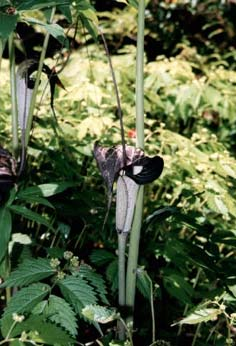

View from the ropeway station. On the way up we saw that the rock formations are actually man-made (see below). |
|
|  |
The group that walked up. Christer, Olivia, Björn, Souad, Naomi, Slava. Iulia took the picture. |
Man made cliffs in the temple complex of Nihon-Ji. |
More of the same. |
A bamboo forest with fresh shoots. |
|